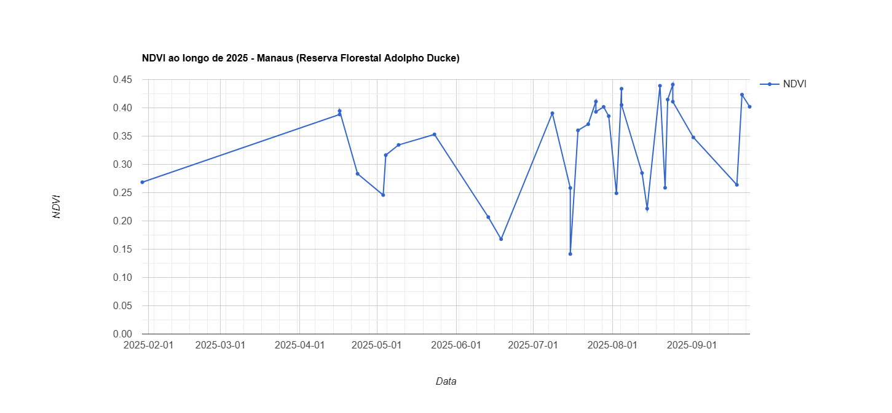
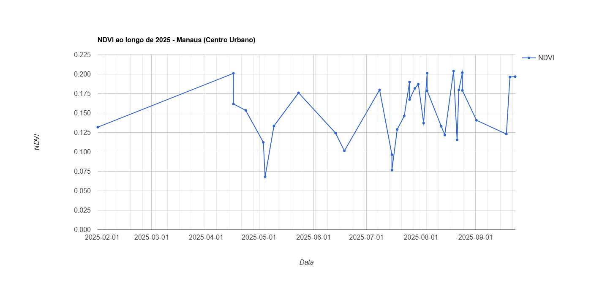

🌸 Floração e Frutificação
A fenologia de Manaus, situada no coração da Amazônia, revela um ciclo natural impressionante, marcado por ritmos biológicos que se entrelaçam com o clima tropical da região. Vamos explorar como a flora local se comporta ao longo do ano, destacando suas fases de floração e os impactos das estações climáticas.
Manaus, com seu clima equatorial úmido, apresenta uma vegetação exuberante e dinâmica. A fenologia local é caracterizada por ciclos anuais de floração, frutificação e queda de folhas, influenciados principalmente pela variação na precipitação e temperatura.
A floração na Amazônia Central é geralmente anual, com algumas espécies exibindo floração dupla em anos específicos. Por exemplo, a Paullinia cupana (guaraná) apresentou dois ciclos de floração em 2004, enquanto em 2005 ocorreu apenas um ciclo.
Para analisar melhor, foi realizada uma comparação entre o NDVI da área urbana de Manaus, o centro, e da área rural, a Reserva Florestal Adolpho Ducke, que divide a cidade em dois mundos:
🌍 O que é o NDVI?
- Valores próximos de 1,0 indicam vegetação densa e saudável.
- Valores próximos de 0,0 indicam áreas sem vegetação (solo exposto, construções).
- Valores negativos podem indicar água, nuvens ou superfícies artificiais.
NDVI - Rural (Reserva Adolpho Ducke) vs Urbano (Centro de Manaus)
NDVI - Área Rural
NDVI - Área Urbana
Analisando esses dados podemos constatar a diferença entre ambas as regiões. A área urbana devido a concentração da população ao decorrer dos anos fez com que o índice de NVDI médio anual fosse de apenas 0.163, enquanto na Reserva Florestal já temos um valor mais elevado de 0.336.
Esses valores e o gráfico foram obtidos na ferramenta Earth Engine Code Editor
📍 A Reserva Florestal Adolpho Ducke
Localizada na borda leste de Manaus, a Reserva Florestal Adolpho Ducke é uma das áreas mais importantes de conservação da Amazônia urbana. Criada para preservar a biodiversidade da região, ela funciona como um “pulmão verde” dentro de uma cidade que cresce rapidamente.
Além de sua relevância para a pesquisa científica, a reserva é essencial para a manutenção do equilíbrio climático e para a proteção de inúmeras espécies de fauna e flora.
🌐 Impactos da Urbanização na Vegetação
- Redução da biodiversidade;
- Alteração do microclima local (ilhas de calor);
- Perda de serviços ecossistêmicos, como qualidade do ar e regulação da umidade.
🔎 Conclusão
Essa análise reforça a importância da preservação de áreas verdes dentro e ao redor de centros urbanos. Mesmo em Manaus, a pressão da urbanização é visível e mensurável.
A fenologia de Manaus é um reflexo da complexidade e adaptabilidade da floresta tropical. Compreender esses ciclos é essencial para a conservação e manejo sustentável da biodiversidade local
Compreender os ciclos fenológicos é essencial para conservação e manejo sustentável da biodiversidade local.